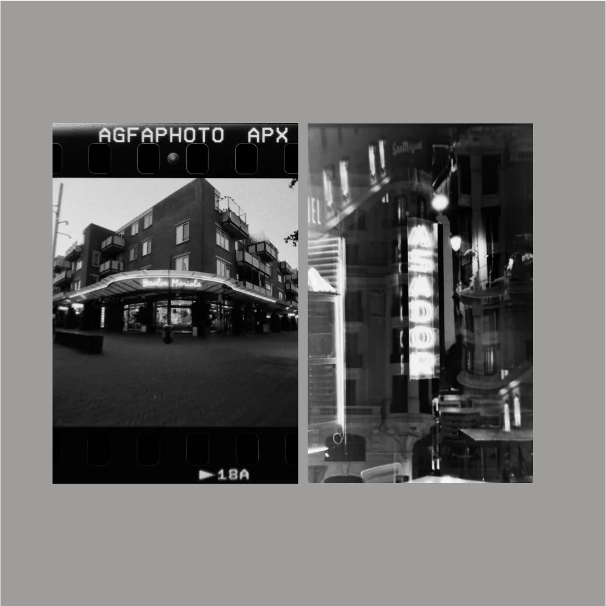

Estudio de fotograma de película analógica
Chasis completo de 35mm y estudio urbano en B/N • Fotografía de Lev K.

Izquierda: Chasis sin recortar de una película de 35mm a partir de un carrete AgfaPhoto APX 400, conservando intactos la numeración original de los fotogramas, las flechas direccionales y las perforaciones de arrastre alrededor de la perspectiva arquitectónica.
Derecha: Estudio de reflejos nocturnos urbanos en blanco y negro de alto contraste, con reflejos de farolas y rótulos de neón.